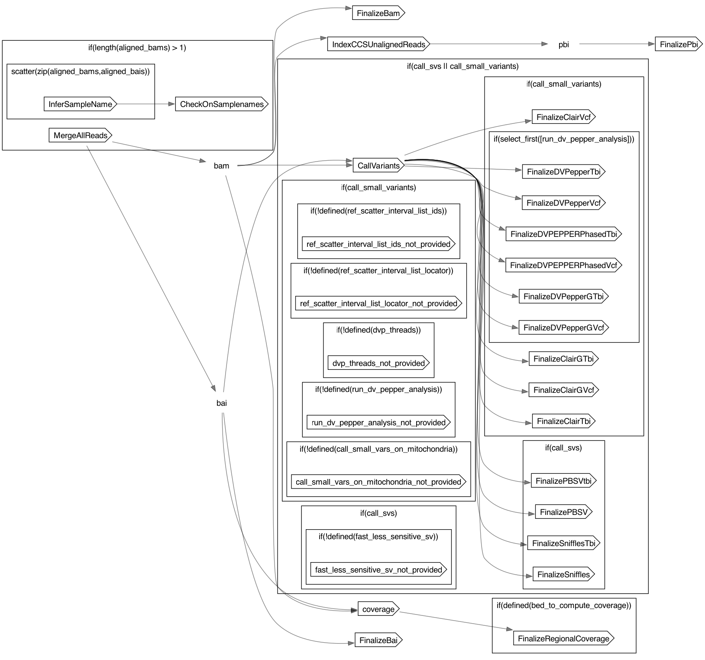

PBCCSWholeGenome
PBCCSWholeGenome
- description
- A workflow that performs single sample variant calling on PacBio HiFi reads from one or more flow cells. The workflow merges multiple SMRT cells into a single BAM prior to variant calling.
Inputs
Required
aligned_bais(Array[File], required): GCS path to aligned BAM file indicesaligned_bams(Array[File], required): GCS path to aligned BAM filesgcs_out_root_dir(String, required): GCS bucket to store the reads, variants, and metrics filesparticipant_name(String, required): name of the participant from whom these samples were obtainedref_map_file(File, required): table indicating reference sequence and auxillary file locations
Optional
bed_to_compute_coverage(File?)call_small_vars_on_mitochondria(Boolean?): if false, will not attempt to call variants on mitochondria; if true, some samples might fail (caller feature) due to lack of signaldvp_memory(Int?)dvp_threads(Int?)fast_less_sensitive_sv(Boolean?): to trade less sensitive SV calling for faster speedref_scatter_interval_list_ids(File?): A file that gives short IDs to the interval_list files; needed only when running DV-Pepperref_scatter_interval_list_locator(File?): A file holding paths to interval_list files; needed only when running DV-Pepperrun_dv_pepper_analysis(Boolean?): to turn on DV-Pepper analysis or not (non-trivial increase in cost and runtime)sites_vcf(File?): for use with Clairsites_vcf_tbi(File?): for use with ClairFinalizeBai.keyfile(File?)FinalizeBai.runtime_attr_override(RuntimeAttr?)FinalizeBam.keyfile(File?)FinalizeBam.runtime_attr_override(RuntimeAttr?)FinalizeClairGTbi.keyfile(File?)FinalizeClairGTbi.name(String?)FinalizeClairGTbi.runtime_attr_override(RuntimeAttr?)FinalizeClairGVcf.keyfile(File?)FinalizeClairGVcf.name(String?)FinalizeClairGVcf.runtime_attr_override(RuntimeAttr?)FinalizeClairTbi.keyfile(File?)FinalizeClairTbi.name(String?)FinalizeClairTbi.runtime_attr_override(RuntimeAttr?)FinalizeClairVcf.keyfile(File?)FinalizeClairVcf.name(String?)FinalizeClairVcf.runtime_attr_override(RuntimeAttr?)FinalizeDVPEPPERPhasedTbi.keyfile(File?)FinalizeDVPEPPERPhasedTbi.runtime_attr_override(RuntimeAttr?)FinalizeDVPEPPERPhasedVcf.keyfile(File?)FinalizeDVPEPPERPhasedVcf.runtime_attr_override(RuntimeAttr?)FinalizeDVPepperGTbi.keyfile(File?)FinalizeDVPepperGTbi.name(String?)FinalizeDVPepperGTbi.runtime_attr_override(RuntimeAttr?)FinalizeDVPepperGVcf.keyfile(File?)FinalizeDVPepperGVcf.name(String?)FinalizeDVPepperGVcf.runtime_attr_override(RuntimeAttr?)FinalizeDVPepperTbi.keyfile(File?)FinalizeDVPepperTbi.name(String?)FinalizeDVPepperTbi.runtime_attr_override(RuntimeAttr?)FinalizeDVPepperVcf.keyfile(File?)FinalizeDVPepperVcf.name(String?)FinalizeDVPepperVcf.runtime_attr_override(RuntimeAttr?)FinalizePBSV.keyfile(File?)FinalizePBSV.name(String?)FinalizePBSV.runtime_attr_override(RuntimeAttr?)FinalizePBSVtbi.keyfile(File?)FinalizePBSVtbi.name(String?)FinalizePBSVtbi.runtime_attr_override(RuntimeAttr?)FinalizePbi.keyfile(File?)FinalizePbi.runtime_attr_override(RuntimeAttr?)FinalizeRegionalCoverage.keyfile(File?)FinalizeRegionalCoverage.name(String?)FinalizeRegionalCoverage.runtime_attr_override(RuntimeAttr?)FinalizeSniffles.keyfile(File?)FinalizeSniffles.name(String?)FinalizeSniffles.runtime_attr_override(RuntimeAttr?)FinalizeSnifflesTbi.keyfile(File?)FinalizeSnifflesTbi.name(String?)FinalizeSnifflesTbi.runtime_attr_override(RuntimeAttr?)IndexCCSUnalignedReads.runtime_attr_override(RuntimeAttr?)MergeAllReads.runtime_attr_override(RuntimeAttr?)CallVariants.Clair.chr(String?)CallVariants.Clair.runtime_attr_override(RuntimeAttr?)CallVariants.MakeChrIntervalList.runtime_attr_override(RuntimeAttr?)CallVariants.MarginPhase.runtime_attr_override(RuntimeAttr?)CallVariants.MergeAndSortClairVCFs.header_definitions_file(File?)CallVariants.MergeAndSortClairVCFs.runtime_attr_override(RuntimeAttr?)CallVariants.MergeAndSortClair_gVCFs.header_definitions_file(File?)CallVariants.MergeAndSortClair_gVCFs.runtime_attr_override(RuntimeAttr?)CallVariants.MergeBams.runtime_attr_override(RuntimeAttr?)CallVariants.MergeDeepVariantGVCFs.header_definitions_file(File?)CallVariants.MergeDeepVariantGVCFs.runtime_attr_override(RuntimeAttr?)CallVariants.MergeDeepVariantVCFs.header_definitions_file(File?)CallVariants.MergeDeepVariantVCFs.runtime_attr_override(RuntimeAttr?)CallVariants.MergePBSVVCFs.runtime_attr_override(RuntimeAttr?)CallVariants.SmallVariantsScatter.runtime_attr_override(RuntimeAttr?)CallVariants.SmallVariantsScatterPrepp.runtime_attr_override(RuntimeAttr?)CallVariants.Sniffles2SV.runtime_attr_override(RuntimeAttr?)CallVariants.SubsetBam.runtime_attr_override(RuntimeAttr?)CallVariants.ZipAndIndexPBSV.runtime_attr_override(RuntimeAttr?)CallVariants.ZipAndIndexSnifflesVCF.runtime_attr_override(RuntimeAttr?)CallVariants.size_balanced_scatter.runtime_attr_override(RuntimeAttr?)coverage.ComputeGenomeLength.runtime_attr_override(RuntimeAttr?)coverage.MosDepthOverBed.runtime_attr_override(RuntimeAttr?)coverage.NanoPlotFromBam.runtime_attr_override(RuntimeAttr?)coverage.cov_over_region.runtime_attr_override(RuntimeAttr?)CallVariants.CCSPepper.deep_variant.runtime_attr_override(RuntimeAttr?)CallVariants.CCSPepper.get_hap_tagged_bam.runtime_attr_override(RuntimeAttr?)CallVariants.PBSVslow.Call.runtime_attr_override(RuntimeAttr?)CallVariants.PBSVslow.Discover.chr(String?)CallVariants.PBSVslow.Discover.runtime_attr_override(RuntimeAttr?)CallVariants.RunPBSV.Call.runtime_attr_override(RuntimeAttr?)CallVariants.RunPBSV.Discover.chr(String?)CallVariants.RunPBSV.Discover.runtime_attr_override(RuntimeAttr?)
Defaults
call_small_variants(Boolean, default=true): whether to call small variantscall_svs(Boolean, default=true): whether to call SVsCallVariants.minsvlen(Int, default=50)CallVariants.SmallVariantsScatter.prefix(String, default="subset")CallVariants.SubsetBam.prefix(String, default="subset")
Outputs
aligned_bam(File)aligned_bai(File)aligned_pbi(File)aligned_num_reads(Float)aligned_num_bases(Float)aligned_frac_bases(Float)aligned_est_fold_cov(Float)aligned_read_length_mean(Float)aligned_read_length_median(Float)aligned_read_length_stdev(Float)aligned_read_length_N50(Float)average_identity(Float)median_identity(Float)bed_cov_summary(File?)pbsv_vcf(File?)pbsv_tbi(File?)sniffles_vcf(File?)sniffles_tbi(File?)clair_vcf(File?)clair_tbi(File?)clair_gvcf(File?)clair_gtbi(File?)dvp_vcf(File?)dvp_tbi(File?)dvp_g_vcf(File?)dvp_g_tbi(File?)dvp_phased_vcf(File?)dvp_phased_tbi(File?)
Dot Diagram
